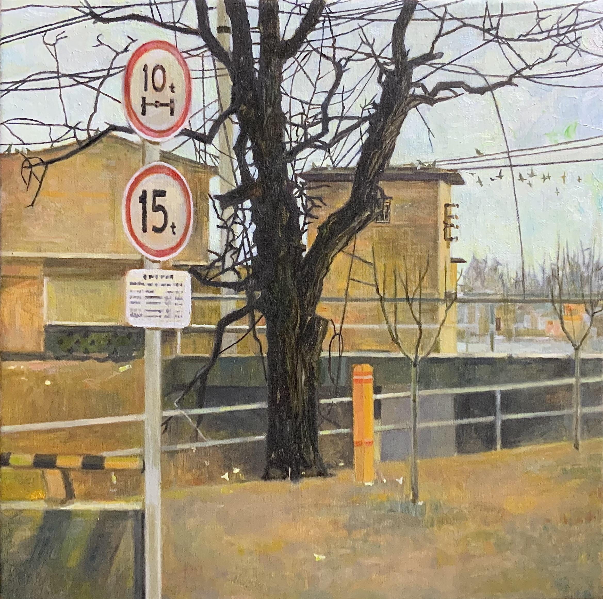

精选作品 01《齐之焦》 · 布面油画 · 2024查看作品 ↗风景作为一种
内在的地形 ↘
内在的地形 ↘
我从熟悉的日常景象出发，在现实空间与内心感受之间寻找一种游移的风景。
↗02 / 精选作品
查看全部作品 ↗在熟悉之中，重新观看。
“我试图通过油画的语言，将自然景观与内心世界结合起来，展现一种介于现实与内心之间的视觉体验。”继续阅读 ↗

精选作品 01《齐之焦》 · 布面油画 · 2024查看作品 ↗我从熟悉的日常景象出发，在现实空间与内心感受之间寻找一种游移的风景。
↗“我试图通过油画的语言，将自然景观与内心世界结合起来，展现一种介于现实与内心之间的视觉体验。”继续阅读 ↗